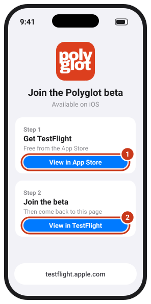
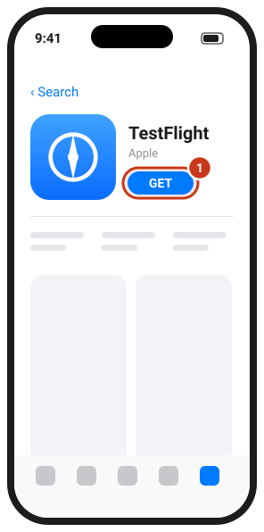
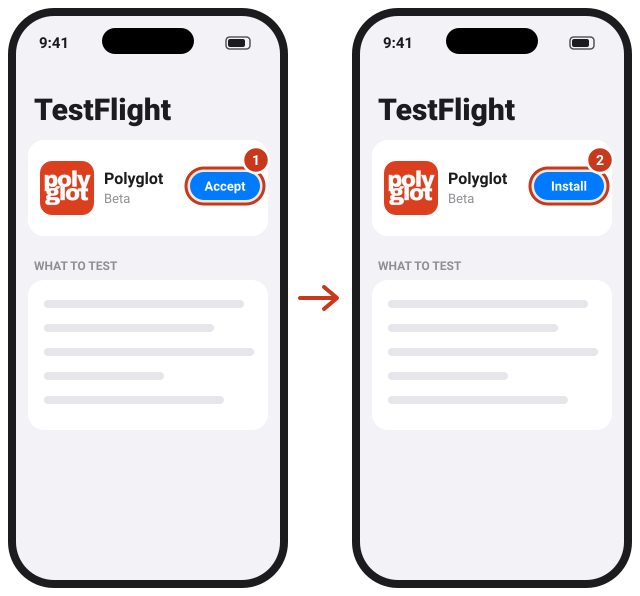
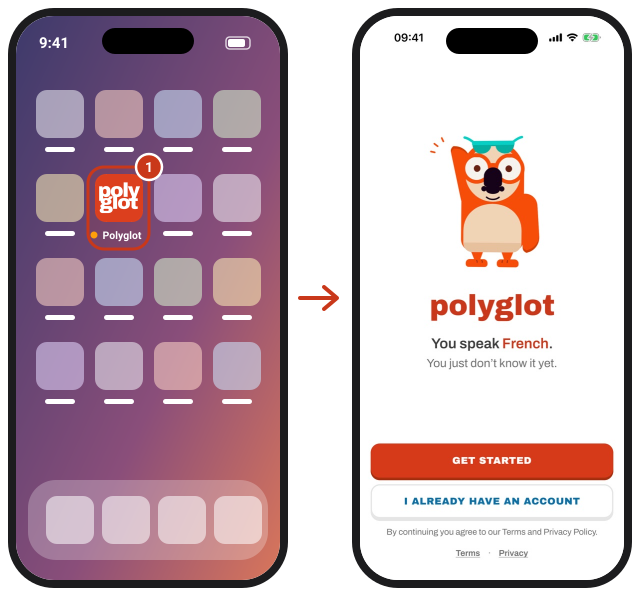
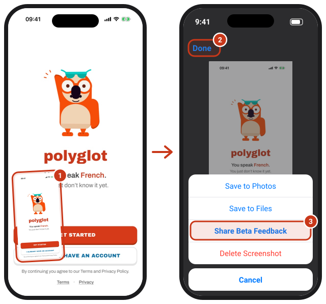

Try Polyglot before it's out
Polyglot teaches French by starting with the words you already know. The beta runs through Apple's TestFlight app. It's free and takes about two minutes.
Join the Polyglot betaNeeds an iPhone with iOS 17 or later. On a computer? Open this page on your iPhone.
Install
1Open the invite on your iPhone
Tap Join the Polyglot beta above. Apple's TestFlight page opens.

2Get TestFlight (first time only)
Tap 1 View in App Store and get TestFlight, Apple's free app for betas. Already have it? Go to step 3.

3Accept and install
Back on the TestFlight page, tap 2 View in TestFlight. In TestFlight, tap Accept, then Install.

4Open Polyglot
Find Polyglot on your Home Screen. The small orange dot before its name means it's a beta. Tap Get started and Poly takes it from there.

Send feedback
This is what helps most. 1 Take a screenshot in the app and tap the preview in the corner, 2 tap Done, 3 choose Share Beta Feedback. Add a note on what was confusing, broken or slow.

You can also open TestFlight, tap Polyglot and choose Send Beta Feedback, or email gemplay.app@gmail.com.
Good to know
Polyglot Max is free in the beta. Purchases in TestFlight use Apple's test system, so your card is never charged. A beta subscription ends by itself after a few days; you can get it again for free.
Updates. New versions arrive in TestFlight, which tells you when there's one. To get them without asking, open TestFlight, tap Polyglot and turn on Automatic Updates.
Each beta version works for 90 days. If Polyglot stops opening, install the newest version from TestFlight.
Your progress stays on your iPhone. Signing in with Apple (on the Me tab) is optional and saves it to your account.
What we see. TestFlight shares the feedback you send, including your Apple Account email, plus crash reports and your device and iOS version. More in our Privacy Policy.
Leaving the beta. Open TestFlight, tap Polyglot and choose Stop Testing, or simply delete the app.
Спробуйте Polyglot до релізу
Polyglot навчає французької, починаючи зі слів, які ви вже знаєте. Бета-версія працює через застосунок Apple TestFlight. Це безплатно і займає приблизно дві хвилини.
Приєднатися до бети PolyglotПотрібен iPhone з iOS 17 або новішою. Ви за комп'ютером? Відкрийте цю сторінку на iPhone.
Встановлення
1Відкрийте запрошення на iPhone
Натисніть Приєднатися до бети Polyglot вище. Відкриється сторінка Apple TestFlight.
2Встановіть TestFlight (лише вперше)
Натисніть 1 View in App Store («Переглянути в App Store») і завантажте TestFlight, безплатний застосунок Apple для бет. Уже є? Переходьте до кроку 3.
3Прийміть і встановіть
Поверніться на сторінку TestFlight і натисніть 2 View in TestFlight («Переглянути в TestFlight»). У TestFlight натисніть Accept («Прийняти»), потім Install («Інсталювати»).
4Відкрийте Polyglot
Знайдіть Polyglot на початковому екрані. Маленька помаранчева крапка перед назвою означає, що це бета. Натисніть Get started, і далі вас веде Poly.
Відгуки
Це допомагає найбільше. 1 Зробіть скриншот у застосунку й торкніться прев'ю в куті, 2 натисніть Done («Готово»), 3 виберіть Share Beta Feedback (відгук про бету). Напишіть, що було незрозуміло, зламалося чи гальмувало.
Також можна відкрити TestFlight, вибрати Polyglot і натиснути Send Beta Feedback, або написати на gemplay.app@gmail.com.
Варто знати
Polyglot Max у беті безплатний. Покупки в TestFlight проходять через тестову систему Apple, тож з картки нічого не списується. Бета-підписка сама закінчується за кілька днів; її можна знову оформити безплатно.
Оновлення. Нові версії з'являються в TestFlight, і він повідомляє про них. Щоб вони встановлювалися самі, відкрийте TestFlight, виберіть Polyglot і ввімкніть Automatic Updates («Автоматичні оновлення»).
Кожна бета-версія працює 90 днів. Якщо Polyglot перестав відкриватися, встановіть найновішу версію з TestFlight.
Ваш прогрес зберігається на iPhone. Вхід через Apple (вкладка Me) необов'язковий і зберігає прогрес у вашому акаунті.
Що ми бачимо. TestFlight передає нам ваші відгуки разом з email вашого Apple Account, а також звіти про збої, модель пристрою та версію iOS. Докладніше — у Політиці конфіденційності (англійською).
Як вийти з бети. Відкрийте TestFlight, виберіть Polyglot і натисніть Stop Testing, або просто видаліть застосунок.